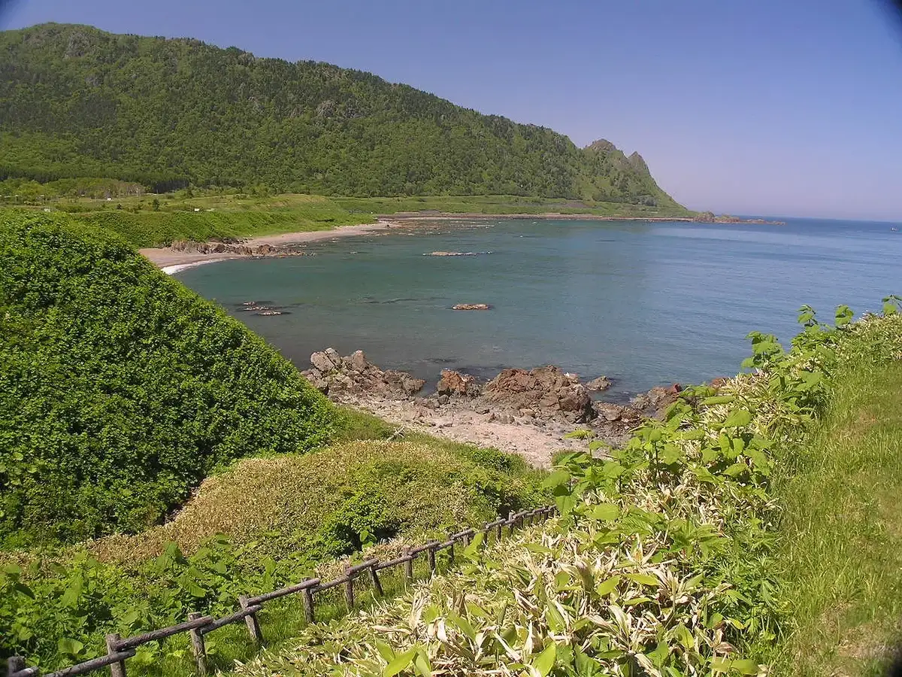
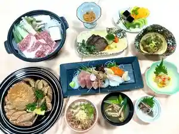
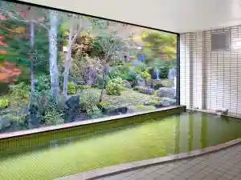
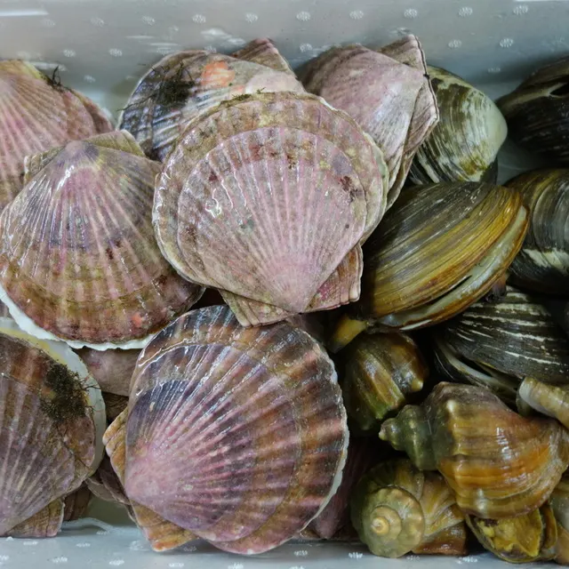
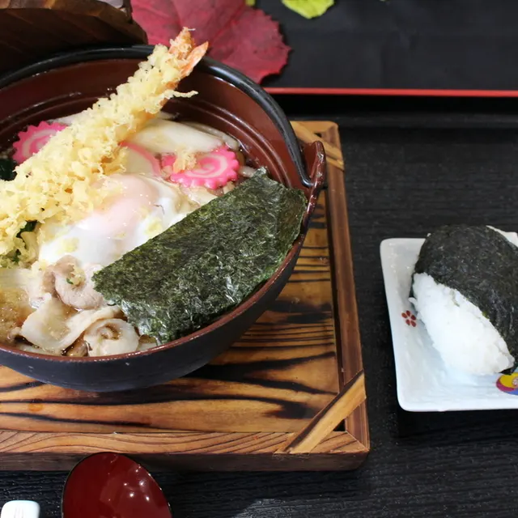
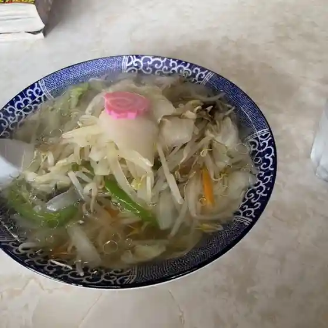
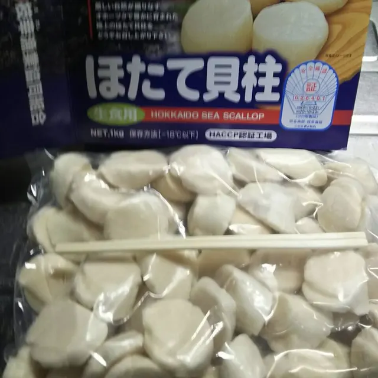
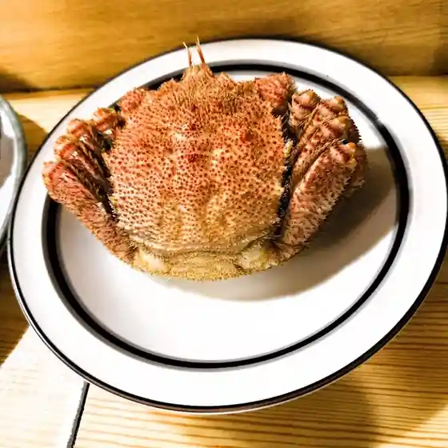
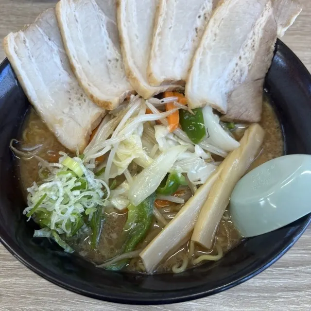

Esashi
Esashi · Hokkaido
Esashi
Highlighted on the Hokkaido map.

Stay
ホテルニュー幸林

Hoterunyuu Sachi Hayashi
うたのぼりグリーンパークホテル

Utanobori Guriinpaakuhoteru
Dining
オホーツク活魚

Ohootsuku Ikeuo
レストラン 函岳

Resutoran Hako Gaku
南仙食堂

Minami Sen Shokudou
大崎旅館

Oosaki Ryokan
枝幸漁業協同組合

Esashi Gyogyou Kyoudoukumiai
だら銭

Dara Sen
ラーメン てるや

Raamen Teruya
Kitchen 宮夜

Kitchen Miya Yoru
セイコーマート 歌登店
Seikoomaato Utanobori Mise
パティスリー ひらおか
Pateisurii Hiraoka
ビストロノブ
Bisutoronobu
海洋食品 おみやげ直売所
Kaiyou Shokuhin Omiyage Chokubai Tokoro
レストラン 海朱
Resutoran Umi Shu
食事処 㐂多や
Shokuji Tokoro Kita Ya
みぞの
Mizono
まるとも食堂
Marutomo Shokudou
西條 枝幸店
Saijou Esashi Mise
ペリカン 西條枝幸店
Perikan Saijou Esashi Mise
バー・フォーション
Baa Fooshon
春駒
Harugoma
うたのぼり グリーンパークホテル
Utanobori Guriinpaakuhoteru
呑喜
Don Ki
賞花堂
Shou Hana Dou
クワトロ
Kuwatoro